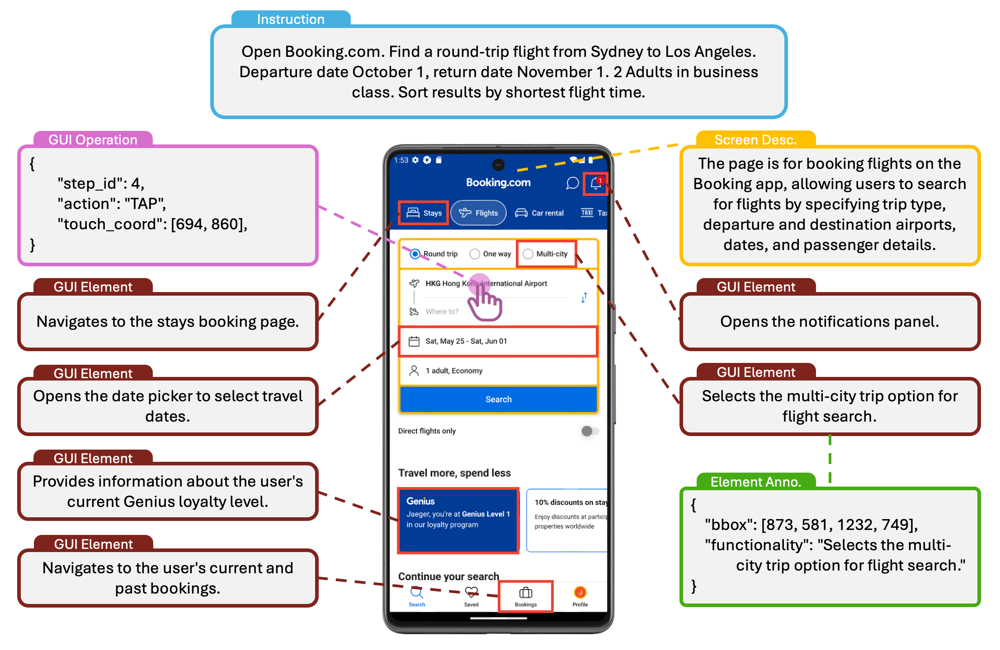
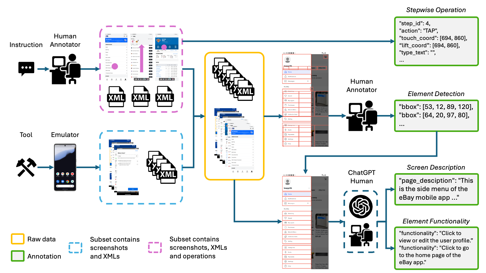

An example of a screenshot-instruction (Blue tab) pair illustrating the multi-level annotation of AMEX. Red boxes + Brown tabs: selected GUI interactive elements and their corresponding functionalities. Green tab: the detailed annotation of the element. Yellow tab: the description of the entire screenshot. Purple hand icon + tab: the current action and the annotation.

Overview of the data collection pipeline. The raw data is from two subsets collected by human annotators and an autonomous tool respectively, while annotators record the GUI-action chains simultaneously. Then raw data is sent to annotators to filter GUI element bounding boxes, then they with raw screenshots are sent as input to GPT to extract the GUI screen and element descriptions, which are then manually checked by humans.